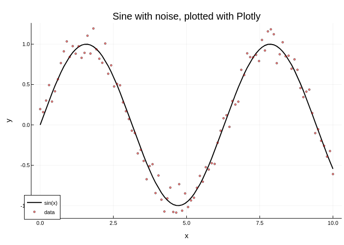

Tutorial
This is a guide for getting you up and running with Plots.jl. Its main goal is to introduce you to the terminology used in the package, how to use Plots.jl in common use cases, and put you in a position to easily understand the rest of the manual. It is recommended that the code examples be followed inside the REPL or an interactive notebook.
Basic Plotting: Line Plots
After you have installed Plots.jl via Pkg.add("Plots"), the first step is to initialize the package. Depending on your computer, this will take a few seconds:
using PlotsTo start, let's plot some trigonometric functions. For the x coordinates, we can create a range from 0 to 10 of, say, 100 elements. For the y coordinates, we can create a vector by evaluating sin(x) in an element-wise fashion. To do this in Julia, we insert a dot right after the function call. Finally, we use plot() to plot the line.
x = range(0, 10, length=100)
y = sin.(x)
plot(x, y)The plot is displayed in a plot pane, a stand-alone window or the browser, depending on the environment and backend (see below).
If this is your first plot of the session and it takes a while to show up, this is normal; this latency is called the "time to first plot" problem (or TTFP), and subsequent plots will be fast. Because of the way Julia works under the hood, this is a difficult problem to solve, but much progress has been made in the past few years to reduce this compilation time.
In Plots.jl, every column is a series, a set of related points which form lines, surfaces, or other plotting primitives. We can plot multiple lines by plotting a matrix of values where each column is interpreted as a separate line. Below, [y1 y2] forms a 100x2 matrix (100 elements, 2 columns).
x = range(0, 10, length=100)
y1 = sin.(x)
y2 = cos.(x)
plot(x, [y1 y2])Additionally, we can add more lines by mutating the plot object. This is done by the plot! command, where the ! denotes that the command is modifying the current plot. You'll notice that we also use an @. macro. This is a convenience macro that inserts dots for every function call to the right of the macro, ensuring that the entire expression is to be evaluated in an element-wise manner. If we inputted the dots manually, we would need three of them for the sine, exponent, and subtraction, and the resulting code would be less readable.
y3 = @. sin(x)^2 - 1/2 # equivalent to y3 = sin.(x).^2 .- 1/2
plot!(x, y3)Note that we could have done the same as above using an explicit plot variable, which we call p:
x = range(0, 10, length=100)
y1 = sin.(x)
y2 = cos.(x)
p = plot(x, [y1 y2])
y3 = @. sin(x)^2 - 1/2
plot!(p, x, y3)In cases where the plot variable is omitted, Plots.jl uses the global Plots.CURRENT_PLOT automatically.
Saving Figures
Saving plots is done by the savefig command. For example:
savefig("myplot.png") # saves the CURRENT_PLOT as a .png
savefig(p, "myplot.pdf") # saves the plot from p as a .pdf vector graphicThere also exist convenience functions png, Plots.pdf and other unexported helpers. With these, the extension is omitted from the filename. The following is equivalent to the above code:
png("myplot")
Plots.pdf(p, "myplot")More information about outputting figures can be found in the Output section of the Manual.
Plot Attributes
In the previous section we made plots... we're done, right? No! We need to style our plots. In Plots.jl, the modifiers to plots are called attributes, which are documented at the attributes page. Plots.jl follows two simple rules with data and attributes:
- Positional arguments correspond to input data
- Keyword arguments correspond to attributes
So something like plot(x, y, z) is three-dimensional data for 3D plots with no attributes, while plot(x, y, attribute=value) is two-dimensional data with one attribute assigned to some value.
As an example, we can change the line width using linewidth (or its alias lw), change the legend's labels using label, and add a title with title. Notice how ["sin(x)" "cos(x)"] has the same number of columns as the data. Additionally, since the line width is being attributed to [y1 y2], both lines will be affected by the assigned value. Let's apply all of this to our previous plot:
x = range(0, 10, length=100)
y1 = sin.(x)
y2 = cos.(x)
plot(x, [y1 y2], title="Trigonometric functions", label=["sin(x)" "cos(x)"], linewidth=3)Every attribute can also be applied by mutating the plot with a modifier function. Some attributes have their own dedicated modifier functions, while others can be accessed through plot!(attribute=value). For example, the xlabel attribute adds a label for the x-axis. We can specify it in the plot command with xlabel=..., or we can use the modifier function below to add it after the plot has already been generated. It's up to you to decide which is better for code readability.
xlabel!("x")Every modifier function is the name of the attribute followed by !. This will implicitly use the global Plots.CURRENT_PLOT. We can apply it to other plot objects via attribute!(p, value), where p is the name of the plot object that wants to be modified.
Let's use keywords and modifier functions interchangeably to perform some common modifications to our example, listed below. You'll notice that for the attributes ls and legend, the values include a colon :. The colon denotes a symbol in Julia. They are commonly used for values of attributes in Plots.jl, along with strings and numbers.
- Labels for the individual lines, seen in the legend
- Line widths (we'll use the alias
lwinstead oflinewidth) - Line styles (we'll use the alias
lsinstead oflinestyle) - Legend position (outside the plot, as the default would clutter the plot)
- Legend columns (3, to better use the horizontal space)
- X-limits to go from
0to2pi - Plot title and axis labels
x = range(0, 10, length=100)
y1 = sin.(x)
y2 = cos.(x)
y3 = @. sin(x)^2 - 1/2
plot(x, [y1 y2], label=["sin(x)" "cos(x)"], lw=[2 1])
plot!(x, y3, label="sin(x)^2 - 1/2", lw=3, ls=:dot)
plot!(legend=:outerbottom, legendcolumns=3)
xlims!(0, 2pi)
title!("Trigonometric functions")
xlabel!("x")
ylabel!("y")Note that y3 is being plotted as a dotted line. This is distinct from a scatter plot of the data.
Logarithmic Scale Plots
Sometimes data needs to be plotted across orders of magnitude. The attributes xscale and yscale can be set to :log10 in this case. They can also be set to :identity to keep them linear-scale. Care should be taken to ensure that the data and limits are positive.
x = 10 .^ range(0, 4, length=100)
y = @. 1/(1+x)
plot(x, y, label="1/(1+x)")
plot!(xscale=:log10, yscale=:log10, minorgrid=true)
xlims!(1e+0, 1e+4)
ylims!(1e-5, 1e+0)
title!("Log-log plot")
xlabel!("x")
ylabel!("y")More information about attributes can be found in the Attributes section of the Manual.
LaTeX Equation Strings
Plots.jl works with LaTeXStrings.jl, a package that allows the user to type LaTeX equations in string literals. To install this, type in Pkg.add("LaTeXStrings"). The easiest way to use it is to prepend L to a LaTeX-formatted string. If the string is a mix between normal text and LaTeX equations, insert dollar signs $ as needed.
using LaTeXStrings
x = 10 .^ range(0, 4, length=100)
y = @. 1/(1+x)
plot(x, y, label=L"\frac{1}{1+x}")
plot!(xscale=:log10, yscale=:log10, minorgrid=true)
xlims!(1e+0, 1e+4)
ylims!(1e-5, 1e+0)
title!(L"Log-log plot of $\frac{1}{1+x}$")
xlabel!(L"x")
ylabel!(L"y")Changing Series Type: Scatter Plots
At this point you know about line plots, but don't you want to plot your data in other ways? In Plots.jl, these other ways of plotting a series is called a series type. A line is one series type. However, a scatter plot is another series type which is commonly used.
Let's start with the sine function again, but this time, we'll define a vector called y_noisy that adds some randomness. We can change the series type using the seriestype attribute.
x = range(0, 10, length=100)
y = sin.(x)
y_noisy = @. sin(x) + 0.1*randn()
plot(x, y, label="sin(x)")
plot!(x, y_noisy, seriestype=:scatter, label="data")For each built-in series type, there is a shorthand function for directly calling that series type which matches its name. It handles attributes just the same as the plot command, and it has a mutating form which ends in !. For example, we can write the last line as:
scatter!(x, y_noisy, label="data")The series types which are available are dependent on the backend, and are documented on the Supported Attributes page. As we will describe later, other libraries can add new series types using recipes.
Scatter plots will have some common attributes related to the markers. Here is an example of the same plot, but with some attributes fleshed out to make the plot more presentable. Many aliases are used for brevity, and the list below is by no means exhaustive.
lcforlinecolorlwforlinewidthmcformarkercolormsformarkersizemaformarkeralpha
x = range(0, 10, length=100)
y = sin.(x)
y_noisy = @. sin(x) + 0.1*randn()
plot(x, y, label="sin(x)", lc=:black, lw=2)
scatter!(x, y_noisy, label="data", mc=:red, ms=2, ma=0.5)
plot!(legend=:bottomleft)
title!("Sine with noise")
xlabel!("x")
ylabel!("y")Plotting Backends
Plots.jl is a plotting metapackage: it's an interface over many different plotting libraries. What Plots.jl is actually doing is interpreting your commands and then generating the plots using another plotting library, called the backend. The nice thing about this is that you can use many different plotting libraries all with the Plots.jl syntax, and we'll see in a little bit that Plots.jl adds new features to each of these libraries!
When we started plotting above, our plot used the default backend GR. However, let's say we want a different plotting backend which will plot into a nice GUI or into the plot pane of VS Code. To do this, we'll need a backend which is compatible with these features. Some common backends for this are PythonPlot and Plotly. For example, to install PythonPlot, simply type the command Pkg.add("PythonPlot") into the REPL; to install Plotly, type Pkg.add("PlotlyJS").
We can specifically choose the backend we are plotting into by using the name of the backend in all lowercase as a function. Let's plot the example from above using Plotly and then GR:
plotlyjs() # set the backend to Plotly
x = range(0, 10, length=100)
y = sin.(x)
y_noisy = @. sin(x) + 0.1*randn()
# this plots into a standalone window via Plotly
plot(x, y, label="sin(x)", lc=:black, lw=2)
scatter!(x, y_noisy, label="data", mc=:red, ms=2, ma=0.5)
plot!(legend=:bottomleft)
title!("Sine with noise, plotted with Plotly")
xlabel!("x")
ylabel!("y")"plotlyjs_tutorial.png"
gr() # set the backend to GR
# this plots using GR
plot(x, y, label="sin(x)", lc=:black, lw=2)
scatter!(x, y_noisy, label="data", mc=:red, ms=2, ma=0.5)
plot!(legend=:bottomleft)
title!("Sine with noise, plotted with GR")
xlabel!("x")
ylabel!("y")Each plotting backend has a very different feel. Some have interactivity, some are faster and can deal with huge numbers of datapoints, and some can do 3D plots. Some backends like GR can save to vector graphics and PDFs, while others like Plotly can only save to PNGs.
For more information on backends, see the backends page. For examples of plots from the various backends, see the Examples section.
Plotting in Scripts
At the start of the tutorial, we recommended following along the code examples in an interactive session for the following reason: try adding those same plotting commands to a script. Now call the script... and the plot doesn't show up? This is because Julia in interactive use through the REPL calls display on every variable that is returned by a command without a semicolon ;. In each case above, the interactive usage was automatically calling display on the returned plot objects.
In a script, Julia does not do automatic displays, which is why ; is not necessary. However, if we would like to display our plots in a script, this means we just need to add the display call. For example:
display(plot(x, y))Alternatively, we could call gui() at the end to do the same thing. Finally, if we have a plot object p, we can type display(p) to display the plot.
Combining Multiple Plots as Subplots
We can combine multiple plots together as subplots using layouts. There are many methods for doing this, and we will show two simple methods for generating simple layouts. More advanced layouts are shown in the Layouts page.
The first method is to define a layout which will split a series. The layout command takes in a 2-tuple layout=(N, M) which builds an NxM grid of plots, and it will automatically split a series to be in each plot. For example, if we type layout=(3, 1) on a plot with three series, then we will get three rows of plots, each with one series in it.
Let's define some functions and plot them in separate plots. Since there's only one series in each plot, we'll also remove the legend in each of the plots using legend=false.
x = range(0, 10, length=100)
y1 = @. exp(-0.1x) * cos(4x)
y2 = @. exp(-0.3x) * cos(4x)
y3 = @. exp(-0.5x) * cos(4x)
plot(x, [y1 y2 y3], layout=(3, 1), legend=false)We can also use layouts on plots of plot objects. For example, we can generate four separate plots and make a single plot that combines them into a 2x2 grid.
x = range(0, 10, length=100)
y1 = @. exp(-0.1x) * cos(4x)
y2 = @. exp(-0.3x) * cos(4x)
y3 = @. exp(-0.1x)
y4 = @. exp(-0.3x)
y = [y1 y2 y3 y4]
p1 = plot(x, y)
p2 = plot(x, y, title="Title 2", lw=3)
p3 = scatter(x, y, ms=2, ma=0.5, xlabel="xlabel 3")
p4 = scatter(x, y, title="Title 4", ms=2, ma=0.2)
plot(p1, p2, p3, p4, layout=(2,2), legend=false)Note that the attributes in the individual plots are applied to those individual plots, while the attribute legend=false in the final plot call is applied to all of the subplots.
Plot Recipes and Recipe Libraries
You now know all of the basic terminology of Plots.jl and can roam the documentation freely to become a plotting master. However, there is one thing left: recipes. Plotting recipes are extensions to the Plots.jl framework. They add:
- New
plotcommands via user recipes. - Default interpretations of Julia types as plotting data via type recipes.
- New functions for generating plots via plot recipes.
- New series types via series recipes.
Writing your own recipes is an advanced topic described on the recipes page. Instead, we will introduce the ways that one uses a recipe.
Recipes are included in many recipe libraries. Two fundamental recipe libraries are PlotRecipes.jl and StatsPlots.jl. Let's look into StatsPlots.jl. StatsPlots.jl adds a bunch of recipes, but the ones we'll focus on are:
- It adds a type recipe for
Distributions. - It adds a plot recipe for marginal histograms.
- It adds a bunch of new statistical plot series.
Besides recipes, StatsPlots.jl also provides a specialized macro @df from plotting directly from data tables.
Using User Recipes
A user recipe says how to interpret plotting commands on a new data type. In this case, StatsPlots.jl has a macro @df which allows you to plot a DataFrame directly by using the column names. Let's build a DataFrame with columns a, b, and c, and tell Plots.jl to use a as the x axis and plot the series defined by columns b and c:
# Pkg.add("StatsPlots")
# required for the dataframe user recipe
using StatsPlots
# now let's create the dataframe
using DataFrames
df = DataFrame(a=1:10, b=10*rand(10), c=10*rand(10))
# plot the dataframe by declaring the points by the column names
# x = :a, y = [:b :c] (notice that y has two columns!)
@df df plot(:a, [:b :c])There's not much you have to do here: all of the commands from before (attributes, series types, etc.) will still work on this data:
# x = :a, y = :b
@df df scatter(:a, :b, title="My DataFrame Scatter Plot!")Using a Type Recipe
In addition, StatsPlots.jl extends Distributions.jl by adding a type recipe for its distribution types, so they can be directly interpreted as plotting data:
using Distributions
plot(Normal(3, 5), lw=3)Type recipes are a very convenient way to plot a specialized type which requires no more intervention!
Using Plot Recipes
StatsPlots.jl adds the marginhist multiplot via a plot recipe. For our data, we will pull in the famous iris dataset from RDatasets:
# Pkg.add("RDatasets")
using RDatasets, StatsPlots
iris = dataset("datasets", "iris")
@df iris marginalhist(:PetalLength, :PetalWidth)Here, iris is a DataFrame; using the @df macro on DataFrames described above, we give marginalhist(x, y) the data from the PetalLength and the PetalWidth columns.
Notice that this is more than a series since it generates multiple series (i.e. there are multiple plots due to the hists on the top and right). Thus a plot recipe is not just a series, but also something like a new plot command.
Using Series Recipes
StatsPlots.jl also introduces new series recipes. The key is that you don't have to do anything differently. After using StatsPlots, you can simply use those new series recipes as though they were built into the plotting libraries. Let's use the Violin plot on some random data:
y = rand(100, 4)
violin(["Series 1" "Series 2" "Series 3" "Series 4"], y, legend=false)We can add a boxplot on top using the same mutation commands as before:
boxplot!(["Series 1" "Series 2" "Series 3" "Series 4"], y, legend=false)Additional Addons To Try
Given the easy extendability of Plots.jl, there are many other things you can try. Here's a short list of very usable addons to check out:
- PlotThemes.jl allows you to change the color scheme of your plots. For example,
theme(:dark)adds a dark theme. - StatsPlots.jl adds functionality for visualizations of statistical analysis
- The ecosystem page shows many other packages which have recipes and extend Plots.jl's functionality.